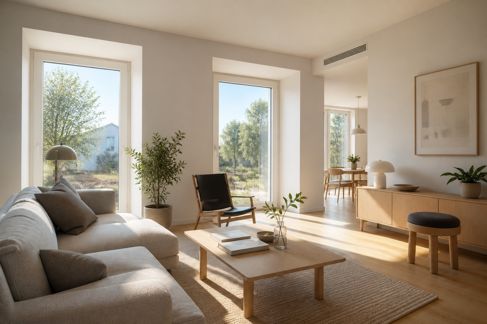

This week’s Passive House sweep: net-zero mechanicals, a Philly Phius duplex, and Maryland incentives
A concrete ductless air-source heat pump (ASHP) + energy recovery ventilator (ERV) playbook, an urban Mid-Atlantic Passive House Institute US (Phius) + Site Zero duplex, and a reminder that Maryland Energy Administration (MEA) federal rebate programs are still waiting on the Department of Energy— while state equity paths keep moving.

ExtraReach is still in the planning stage. This week’s sweep (roughly September 16–21) had three clear signals: a published net-zero mechanicals how-to, a Philadelphia Phius duplex worth watching for urban Mid-Atlantic lessons, and Maryland incentive news that still says “don’t bank on federal HOMES/HEAR yet.”
Building Ω: small ASHPs, balanced ERV, verified airtightness
Green Building Advisor published the mechanicals closeout on Building Ω—a 1,536 square-foot Climate Zone 5A net-zero home in Wauzeka, Wisconsin (Amber Westerman / Clay Yapp). The stack: Manual J–sized ductless ASHPs (about 9,000 + 6,000 Btu/h), intentionally slightly undersized using the Northeast Energy Efficiency Partnerships (NEEP) cold-climate heat-pump product list, plus a fully ducted ERV, solar and battery, and airtightness verification.
NEEP is a regional nonprofit that publishes cold-climate ASHP performance data and product lists so designers can pick units that still deliver heat when outdoor temperatures drop—useful even when ExtraReach’s climate is milder than Wisconsin.
In a tight envelope, small intentionally undersized minisplits plus balanced ERV beat oversized HVAC for comfort, dehumidification, and bills. Put the NEEP cold-climate list on the mechanical shortlist checklist.
Passive George: Phius + Site Zero on a Philly lot
Bright Common’s Passive George duplex rowhomes in Philadelphia (Green Philly tour window September 16–17) target Phius CORE 2021 Prescriptive plus Site Zero: projected passive energy use intensity around 3.3 kBtu/ft²·yr, about R-40 walls and R-67 roof, VRF heat pump + ERV + heat-pump water heater, and roughly 9.6 kW rooftop PV.
For ExtraReach’s Virginia / Mid-Atlantic map, this is a stronger “urban all-electric” reference than Arctic ICF cold-soak demos—and it fits the tour/interview template if local certified visits stay scarce.
Constrained urban lots can still hit Phius + site zero with envelope-first detailing and a PV canopy. Keep Passive George as a Mid-Atlantic case-study pin.
Maryland incentives: MEA still waiting on federal HER
The Maryland Energy Administration (MEA)—Maryland’s state energy office— told a House committee (about September 15) it will resubmit Inflation Reduction Act HOMES/HEAR applications (about $68 million each) by September 30 after Department of Energy delays. Those federal Home Electrification and Rebate (HER) programs still have not launched in Maryland. Separately, MEA’s Residential Energy Equity Heat Pump request for information closed September 18, and FY27 Residential Energy Equity grants (nonprofits and local governments serving low- and moderate-income households) were open through October 1 at 3 p.m.
Virginia’s federal HOMES/HEAR path is in a similar holding pattern. ExtraReach cost posts should keep leaning on state and utility programs—not expired or unlaunched federal lines.
Don’t bank on federal HER for near-term projects. Watch MEA state equity and EmPOWER-style paths for Mid-Atlantic peers; treat Virginia federal rebates as pending until DOE approval is real.
What I’m carrying forward
- Add NEEP cold-climate ASHP list to the ExtraReach mechanical shortlist notes.
- File Passive George as a Mid-Atlantic Phius + Site Zero urban reference for tours and posts.
- Keep MEA / HER language as “stalled federal, moving state equity”—verify before any cost claim.